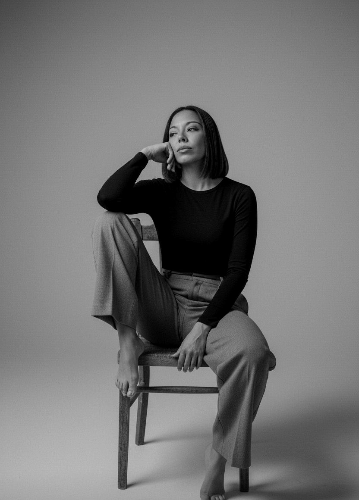

01 / PREGUNTA
Delimitar
Nombrar una cuestión concreta en lugar de intentar resolver toda la identidad de una vez.

No llego con una respuesta cerrada. Llego con una pregunta que quiero investigar de verdad.
¿Quién soy más allá de las etiquetas, de mi historia y de los patrones que repito? Exuvia nació de esa inquietud y de la necesidad de dejar de acumular respuestas para empezar a observar, contrastar y experimentar.

Durante mucho tiempo busqué respuestas en ideas, métodos y caminos distintos de desarrollo personal. Algunas cosas me ayudaron; otras me dejaron nuevas preguntas. Con el tiempo empecé a necesitar algo diferente: no quedarme solo con lo que sonaba convincente, sino entender qué podía observar en mi propia vida, qué podía contrastar y qué todavía no sabía.
Exuvia es el espacio donde convierto esa inquietud en un proceso documentado. No es una historia de transformación perfecta ni la promesa de que una fórmula sirva para todo el mundo. Es una investigación abierta en la que también registro las contradicciones, los retrocesos y las ideas que tengo que revisar.
Mi experiencia es el punto de partida, no la prueba definitiva de cómo funciona todo el mundo. Por eso el proyecto busca separar lo vivido de lo interpretado, y las hipótesis de aquello que la evidencia realmente permite sostener.
Nombrar una cuestión concreta en lugar de intentar resolver toda la identidad de una vez.
Describir qué ocurre, en qué contexto y qué conducta puedo observar sin convertirla enseguida en una conclusión.
Buscar fuentes pertinentes, comparar explicaciones y distinguir evidencia de interpretación personal.
Anotar lo aprendido, reconocer los límites y cambiar de hipótesis cuando los datos no encajan.
Exuvia reúne diferentes formatos, pero todos parten de la misma intención: mirar de cerca lo que hacemos, pensamos y repetimos, y registrar el proceso sin fingir que ya está terminado.
No encontrarás aquí una promesa de cambio instantáneo ni una identidad infalible. Encontrarás preguntas, registros y una forma de trabajar que puede evolucionar con lo que vayamos aprendiendo.